Elettronic Design
This week we have to design an electronic circuit called "hello board" made whit the same micro of the lesson 4 but this time we have to add at least a button (input device) and a led ( output device).
We make some little lesson of basic electronic.
Because I'm an electronic and robotics engineer I help whit those lesson.
I explain the basics law of the electricity, the typical usage and effect of the most used components, the basics of microcontroller and so on.
After we make some experimentation in design the PCB whit eagle in free mode ( whit limitation)
Eagle cad is divided in 3 main pieces:
-schematic
-pcb/board
-libraries
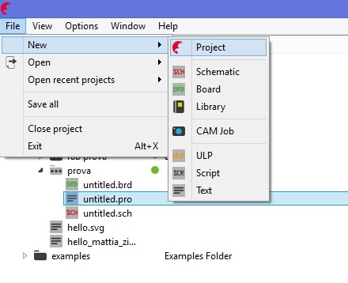
The libraries make possible to make a link between the schematic part and the pcb footprint, make you able to design in simple way your circuit using the simplicity of the schematic process and keep all the traces up to date in the pcb section, so you don't have to remember the physical connection between component and pins but it is already made in the passage between the 3 side of the program.
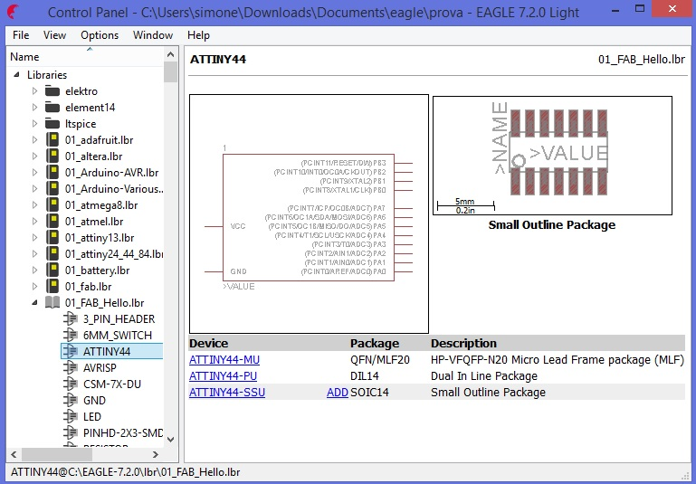
For this exercise we have a library to download and add to the eagle CAD, in it we found all the component we need, just add them to the schematic and we have the footprint ready in the cad.
HERE you can donwloand the library we used to build the circuit
Schematic part is where you have a "schematic" and easy to read representation of the component where all the pin have a number and a nominal name ( usually the name of their function),here you can make all the logical connection between the component and declare the name of the net and data bus.
There are different ways to connect component and wire, the graphical one is to connect whit a line the 2 point (red),
the other is to add a label and name it the same as the net you want to joint (blue).
There is olso a useful thing called Junction who make a point to join 2 line or 2 wire(purple).
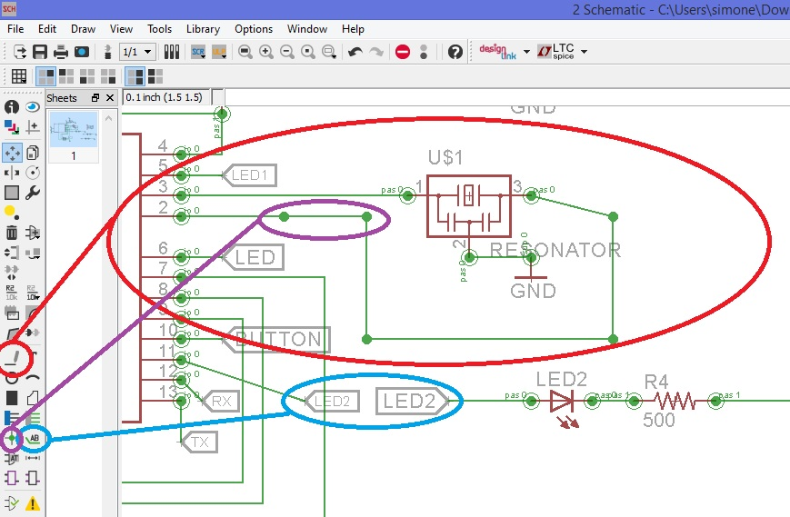
When you switch to the pcb design section all the component are converted in their footprint and physical dimension, the connection are maintained so it is easy to see where the traces have to be made.
you can set a fixed grid that help the drawings of this traces.
A useful tool to have an idea of were the line can pass is the auto-route process; this tool launch a script who calculate the possible way of the traces giving you a different level of optimization.
But is not so clean so after you have to rewrite this traces and make the correction you need whit the tool riprup ( to cancel the traces) and wire (to draw the traces)
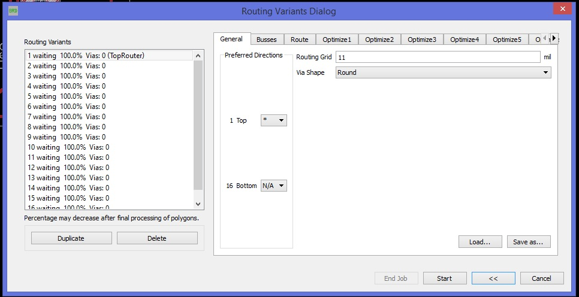
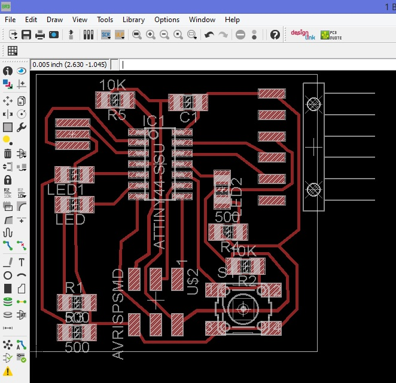
We have all surface mount component so we only need the top layer, in the pcb section we select only top layer and we export the png file, monochrome.
Because of the fact we are using a laser to engrave this pcb we export it in 2000dpi, because we have to modify them after in inkscape to make it vectorial and usable to the Trotec program.
Where the picture is black is where the copper is eliminated.
We set the dimension of the working area to be the same as the copper board so we can arrange better the displacement.
We have also to add a second layer for the laser cut to performs co2 cut so we expand the black on the border to make the copper be engraved and removed and after we draw a vectorial rectangle on the border of the schematic but inside the black , giving them a red colour ( to be used in the Trotec cutting program).
After this the picture need to be exported in svg file.
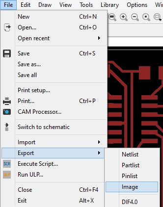
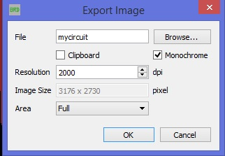
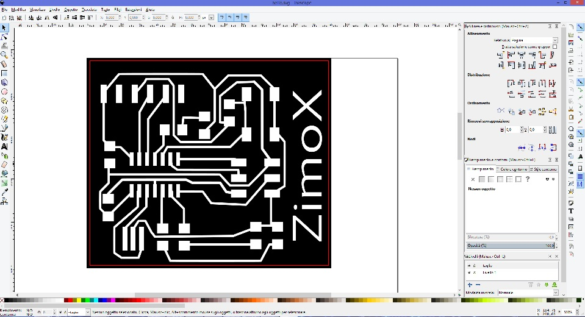
Download the PNG file of eagle Export
Download the SVG file modified by inkcape
Download the RAR file of the eagle schematic and board of HELLOBOARD
After some fail pcb engraving we noticed that the perfect planarity of the pcb engraved is ESSENTIAL because the flexx laser have a so little focus space and a minimum inclination of the board make a fail the the process of removing al the copper...
For this reason we cut a new plexy support for the board and we also put the number of time the laser have to engrave the board from 7 to 9 to make sure all the copper will be removed.
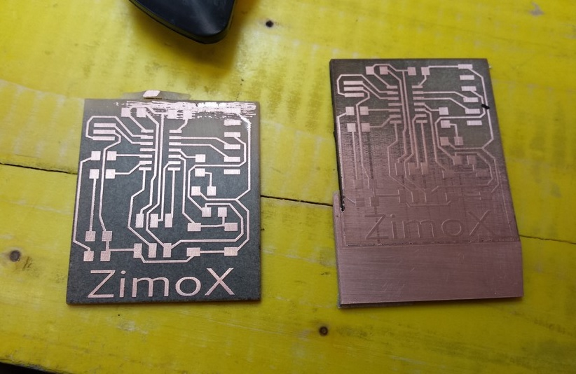
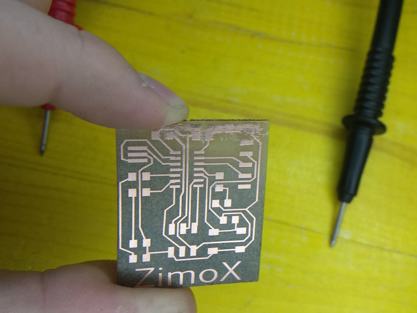
In my design i add also 2 more led to use all the pin of the attiny44.
unfortunately we run out of component for a mismatch in the order and we can all complete the circuit...
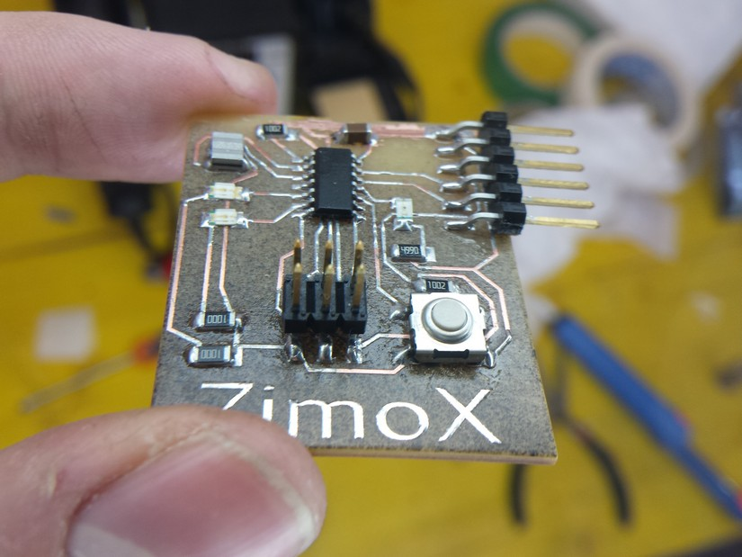
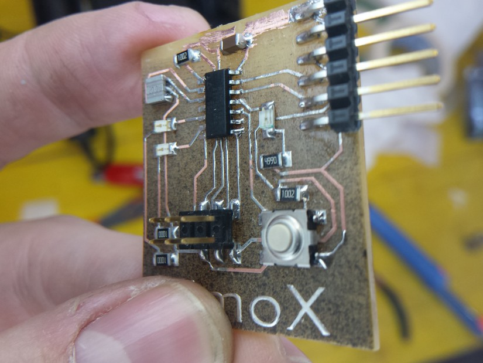
The first circuit doesn't work because of the fact I didn't see some short circuit in the board made by a fail in the laser process ... so I will retry the next week!!!
EDIT
I produce other boards like this and the second have some micro traces of copper done in the process of laser vaporizing, this traces make little short circuit between the traces and some spark comes out of the board (little but visible).
for this reason also this board dosnt work.
I make another more try the week after, rising the time the laser raster the circuit to 10, so the copper il better removed. this time i soldered the component and the board work properly